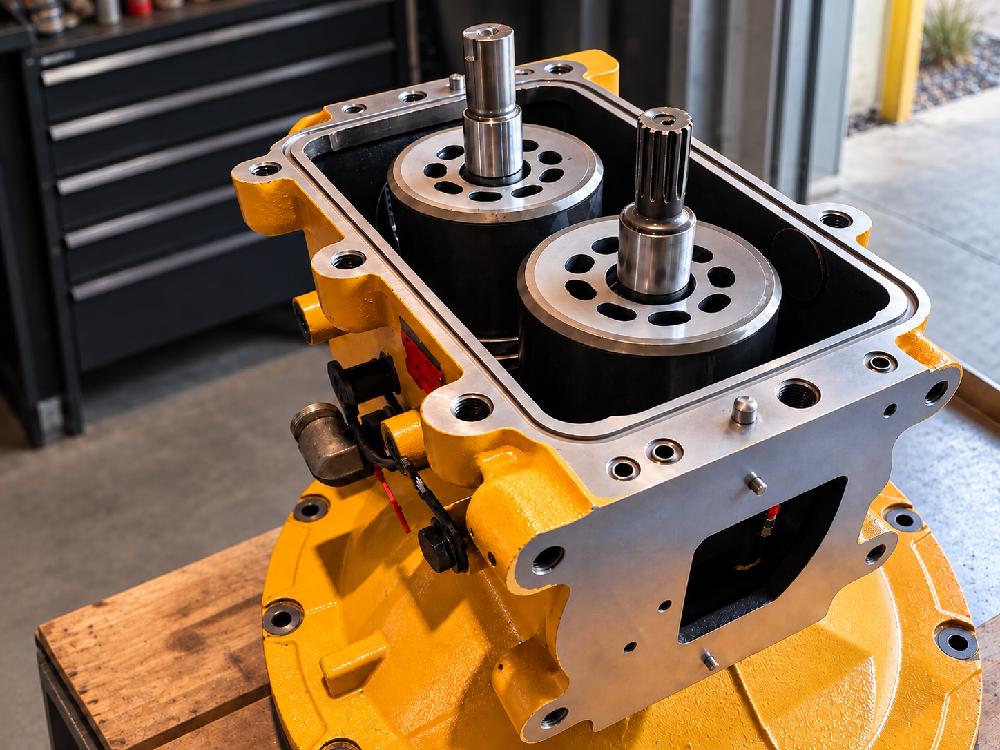

20+ YEARS OF HANDS-ON EXPERIENCE
HEAVY HYDRAULIC
& MECHANICAL
Practical, reliable solutions for heavy-duty machinery. From hydraulic pump diagnostics and rebuilds to mechanical repairs, we keep your equipment working.
REQUEST A QUOTEWHAT WE DO
OUR SERVICES
Hydraulic Pump Diagnostics
Professional diagnostics, servicing and rebuilds for a wide range of hydraulic pumps and systems.
Hydraulic Repairs
Fault finding, repairs and servicing to keep hydraulic systems operating reliably.
Mechanical Repairs
Practical mechanical repairs and solutions for heavy-duty machinery and equipment.
Parts & Pumps
Hydraulic pumps, components and replacement parts for a range of heavy equipment.
EXPERIENCE YOU CAN RELY ON
20+ YEARS
OF EXPERIENCE
With over 20 years of hands-on experience in hydraulics and mechanical systems, we understand the importance of keeping your machinery working.
From diagnostics and repairs to hydraulic pump servicing and rebuilds, we take a practical approach to every job. We combine technical knowledge with quality workmanship to get your equipment back to work.
COMPONENTS & EQUIPMENT
PARTS & PUMPS
Need a hydraulic pump, component or replacement part? Get in touch with your requirements and we'll help find the right solution.
ENQUIRE ABOUT PARTSGET IN TOUCH
HAVE A HYDRAULIC
OR MECHANICAL PROBLEM?
Get in touch to discuss your requirements or request a quote for your next job.
REQUEST A QUOTE